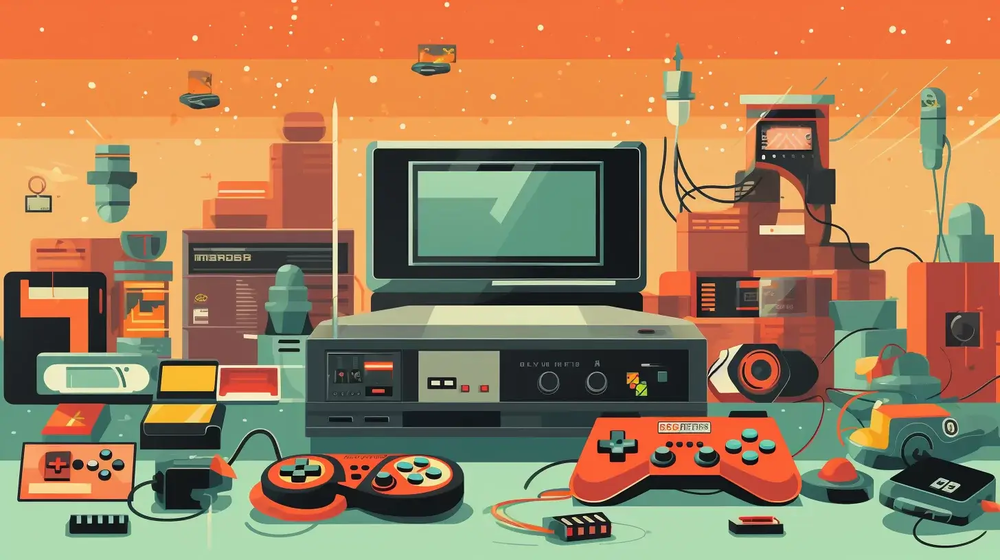

Desde pequeño, siempre he tenido una gran pasión por los videojuegos. Al yo ser una persona bastante creativa me gusta la idea de poder desarrollar esa creatividad en medios que me lo permiten, ya sea en videojuegos de construcción, dibujo o titulos diseñados para el disfrute del jugador. No tengo géneros favoritos ya que cada uno tiene algo lo cual lo puede hacer especial y lo que es mas importante, algo que lo hace unico de entre los demas. Algunos de mis títulos favoritos incluyen Minecraft, No Mans Sky, Elden Ring y Hollow Knight...
La música ocupa un lugar bastante importante en mi vida. Cada que puedo toco el piano y, aunque me falte practica disfruto fluyendo con las melodias que pueda sacar. No tengo estilo de musica favorito ya que escucho todo tipo de musica pero las melodias de piano y la musica de orquesta son los estilos que mas disfruto.